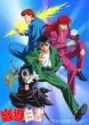

One fateful day, Yuusuke Urameshi, a 14-year-old delinquent with a dim future, gets a miraculous chance to turn it all around when he throws himself in front of a moving car to save a young boy. His ultimate sacrifice is so out of character that the authorities of the spirit realm are not yet prepared to let him pass on. Koenma, heir to the throne of the spirit realm, offers Yuusuke an opportunity to regain his life through completion of a series of tasks. With the guidance of the death god Botan, he is to thwart evil presences on Earth as a Spirit Detective.To help him on his venture, Yuusuke enlists ex-rival Kazuma Kuwabara, and two demons, Hiei and Kurama, who have criminal pasts. Together, they train and battle against enemies who would threaten humanity's very existence.
Categorii
MC:
Side caracters:
Actiune/Suspans:
Plot: